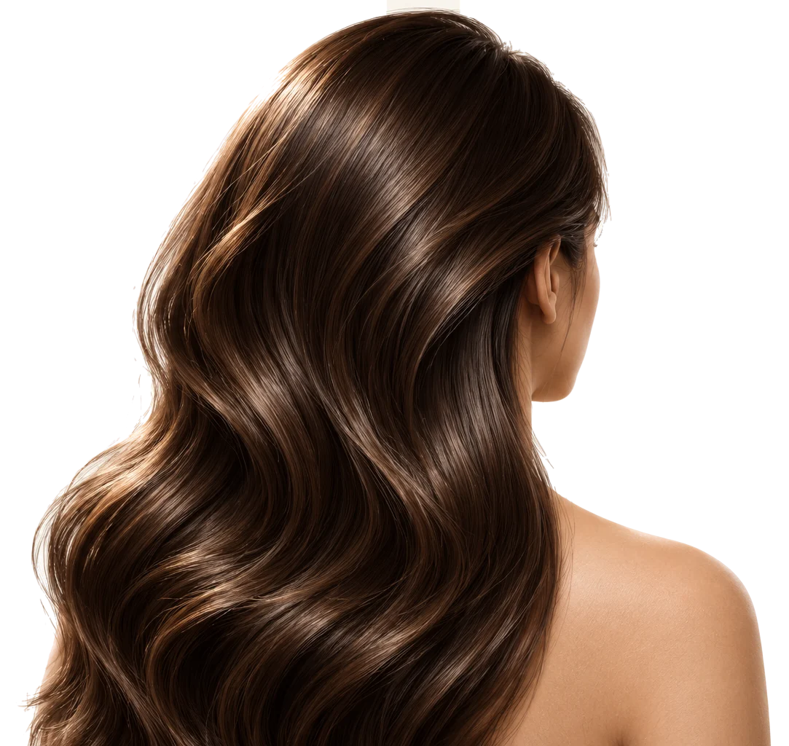

Hair & Scalp Infusion
Hair & Scalp Pro Infusion £269
The Hair & Scalp Infusion combines vitamins, minerals and amino acids involved in the growth and maintenance of healthy hair. Hair is made mostly of a protein called keratin and each follicle needs a steady supply of nutrients to produce it. Biotin and zinc both contribute to the maintenance of normal hair. Zinc also contributes to normal protein synthesis, the process the body uses to build keratin. That process relies on amino acids as its building blocks, which is why the infusion includes lysine and arginine. Arginine also helps the body produce nitric oxide, which regulates blood flow and the delivery of nutrients around the body. Hair follicles are among the most active cells in the body and the B vitamin blend contributes to the normal energy-yielding metabolism they depend on. Vitamins B2 and B3 also contribute to the maintenance of normal skin, including the scalp. Everything is delivered in a litre of electrolyte-rich solution, which rehydrates the body and supports the circulation that carries these nutrients to the scalp. This infusion suits anyone who wants to support their hair from within alongside a balanced diet and a good haircare routine.

What's in it
Ingredients
- Electrolyte-Rich Solution (1 litre)
- Sodium Chloride (242mmol)
- Potassium (5mmol)
- Calcium (2mmol)
- Bicarbonate (29mmol)
- Zinc (6mg)
- Vitamin B1 (25mg)
- Vitamin B2 (2mg)
- Vitamin B3 (50mg)
- Vitamin B5 (8.6mg)
- Vitamin B6 (5mg)
- Biotin (5mg)
- Lysine (1000mg)
- Arginine (1000mg)
Ingredient guide
Electrolyte-Rich Solution
A balanced solution whose sodium, potassium, calcium, chloride and lactate content closely reflects that of blood plasma. It replenishes the electrolytes the body relies on for nerve signalling, muscle contraction and fluid balance.
Zinc
An essential trace mineral required for the activity of more than 300 enzymes. It is needed for the development and function of immune cells and for making DNA and new proteins. Because the body has no dedicated store of zinc a regular supply is important. It contributes to the normal function of the immune system, normal protein synthesis, the maintenance of normal hair, skin and nails and the protection of cells from oxidative stress.
Vitamin B1 (Thiamine)
A water-soluble vitamin that the body converts into an active coenzyme needed to break down glucose for energy. This process takes place in the mitochondria, the energy-producing structures within our cells. Tissues with high energy demands such as the brain, nerves and heart are particularly reliant on it. The body stores very little thiamine so a regular supply is needed. It contributes to normal energy-yielding metabolism, the normal functioning of the nervous system and the normal function of the heart.
Vitamin B2 (Riboflavin)
A water-soluble vitamin that the body uses to make coenzymes needed by the mitochondria to produce energy. It also helps recycle glutathione, one of the body's main antioxidants, so it can continue protecting cells. It contributes to normal energy-yielding metabolism, the maintenance of normal skin, the protection of cells from oxidative stress and the reduction of tiredness and fatigue.
Vitamin B3 (Niacin)
A water-soluble vitamin that the body uses to make NAD, one of the most important coenzymes in the body. NAD is involved in hundreds of reactions that convert food into cellular energy and help repair and maintain cells. It contributes to normal energy-yielding metabolism, normal psychological function, the maintenance of normal skin and the reduction of tiredness and fatigue.
Vitamin B5 (Pantothenic Acid)
A water-soluble vitamin that the body uses to make coenzyme A, a molecule at the centre of metabolism. Coenzyme A is needed to release energy from carbohydrates, fats and proteins and to produce certain hormones. It contributes to normal energy-yielding metabolism, normal mental performance, the normal synthesis of steroid hormones and some neurotransmitters and the reduction of tiredness and fatigue.
Vitamin B6 (Pyridoxine)
A water-soluble vitamin that is converted into an active coenzyme used by more than 100 enzymes, most of them involved in protein metabolism. It is needed to produce neurotransmitters (chemical messengers that carry signals between nerve cells) such as serotonin and dopamine, and to form haemoglobin, the protein in red blood cells that carries oxygen. It contributes to normal red blood cell formation, the normal function of the immune system and the regulation of hormonal activity.
Biotin (Vitamin B7)
A water-soluble vitamin that acts as a coenzyme for enzymes involved in the metabolism of fats, carbohydrates and amino acids. These reactions support energy production and the building of fatty acids, which the skin relies on to maintain its natural protective barrier. Biotin is closely linked to the health of hair, skin and nails, and a lack of biotin is known to cause hair thinning, brittle nails and skin rashes. It contributes to the maintenance of normal hair and normal skin, normal energy-yielding metabolism and the normal metabolism of macronutrients.
Lysine
An essential amino acid, meaning the body cannot make it and it must come from the diet. It is a building block of proteins and has a particular role in collagen, where it helps give the protein its strength and stability. The body also uses lysine to make carnitine.
Arginine
An amino acid used to build proteins and to help the body clear nitrogen waste. It is also the starting material for nitric oxide, a molecule that relaxes the walls of blood vessels and helps regulate blood flow.
All infusions are prescribed and administered by, or under the supervision of, a registered clinician following individual clinical assessment. IV therapy is not a substitute for a balanced diet and healthy lifestyle. Individual results vary. Prices correct at time of publication and subject to change.
Back to all treatments